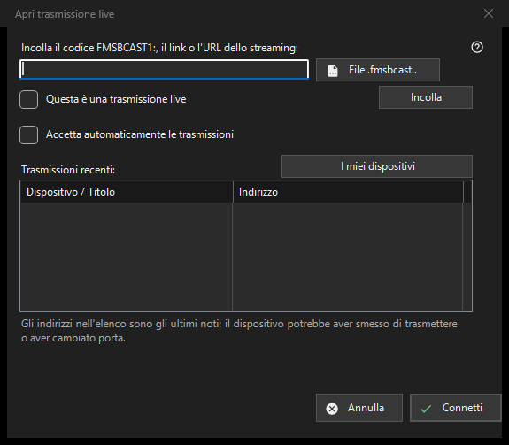

Trasmissione in diretta
Scopo
Incolla un codice FMSBCAST1:, un link o URL del flusso, oppure scegli un file .fmsbcast. Contrassegna un URL normale come diretta solo per una sorgente live; altrimenti si apre come contenuto su richiesta. Premi Connetti e inserisci la password dello spettatore se richiesta. Un indirizzo recente può scadere quando il produttore si ferma o cambia porta. L'accettazione automatica Cast è una scelta esplicita separata.


In questo ordine
Incolla un codice FMSBCAST1:, un link o URL del flusso, oppure scegli un file .fmsbcast. Contrassegna un URL normale come diretta solo per una sorgente live; altrimenti si apre come contenuto su richiesta. Premi Connetti e inserisci la password dello spettatore se richiesta. Un indirizzo recente può scadere quando il produttore si ferma o cambia porta. L'accettazione automatica Cast è una scelta esplicita separata.
Gli elementi
FMSBCAST1: / .fmsbcast
Incolla un codice FMSBCAST1:, un link o URL del flusso, oppure scegli un file .fmsbcast. Contrassegna un URL normale come diretta solo per una sorgente live; altrimenti si apre come contenuto su richiesta. Premi Connetti e inserisci la password dello spettatore se richiesta. Un indirizzo recente può scadere quando il produttore si ferma o cambia porta. L'accettazione automatica Cast è una scelta esplicita separata.
Impostazioni del gestore · Impostazioni condivisione SFTP · Impostazioni server di scambio